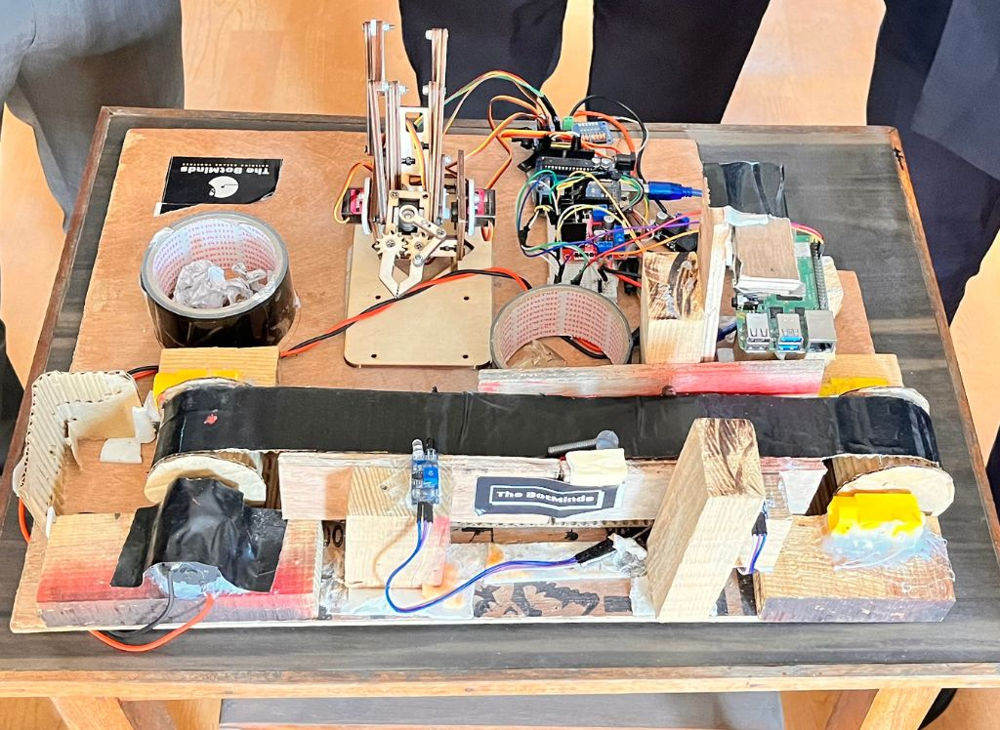
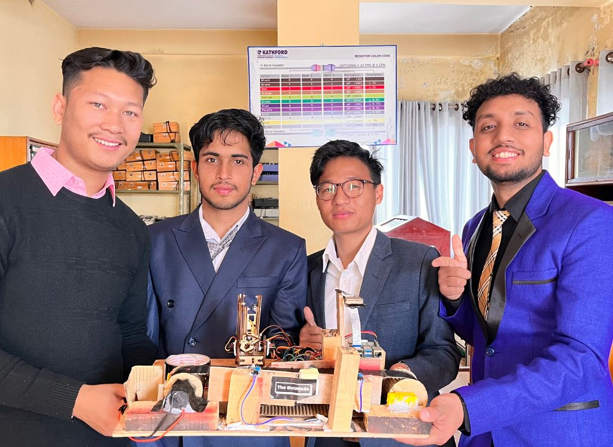

Deep Learning Based Real Time Waste Segrgation Using Robotic Arm

This project automates the waste segregation process using deep learning and robotics. Waste materials are placed on a conveyor belt,
identified in real-time using a YOLO-based object detection model, and sorted by a robotic arm controlled with Arduino and Raspberry Pi.
Technologies Used
- 🔍 Detection: YOLO Object Detection
- 🎛️ Controllers: Raspberry Pi 4B + Arduino UNO
- ⚙️ Mechanism: Conveyor Belt + Robotic Arm
- 🧠 Logic: Real-time classification and actuation
- 📦 Output: Waste is sorted into different bins
GitHub Repository
View on GitHub
Project Report
Gallery

← Back to Projects